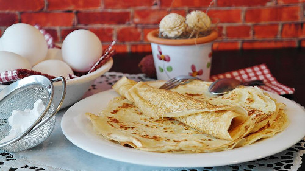

Pancakes

Description
I always cook pancakes on Thursdays, they are tasty with sweet or salty fillings.
Ingredients
Steps
Place and mix all ingredients on a blender
Fry them on a frying pan with a little of oil
Thow them in the air to swich the side you're frying
Back to Recipes